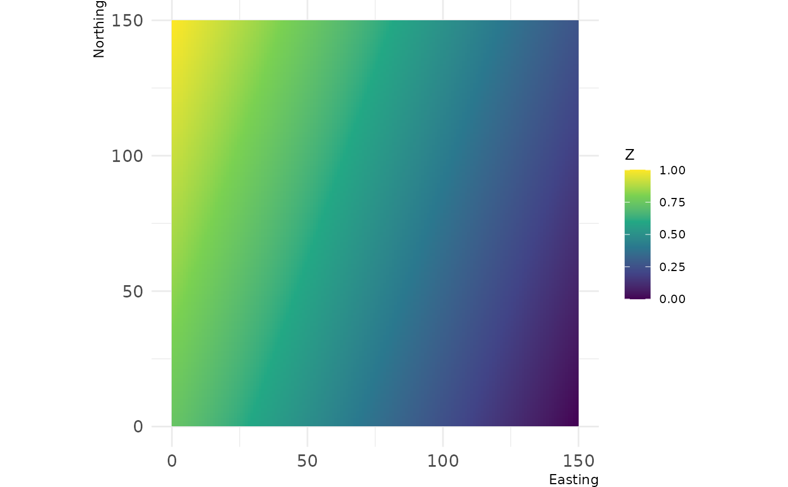
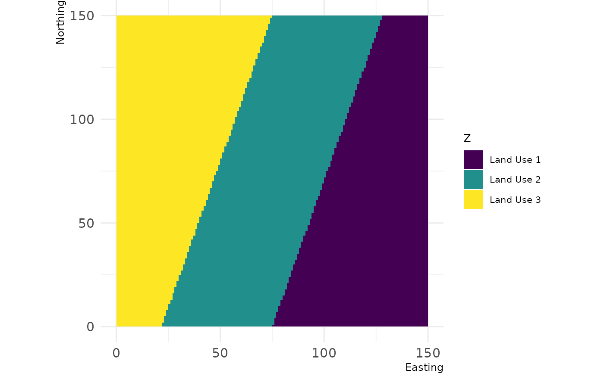
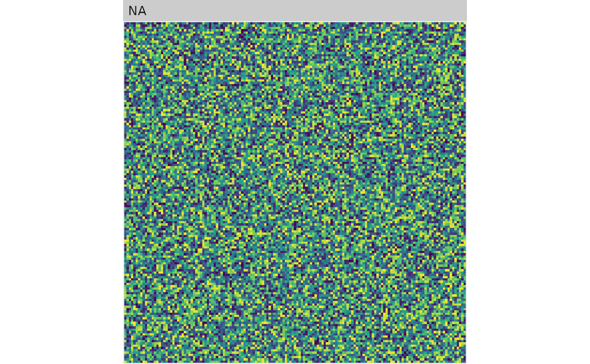
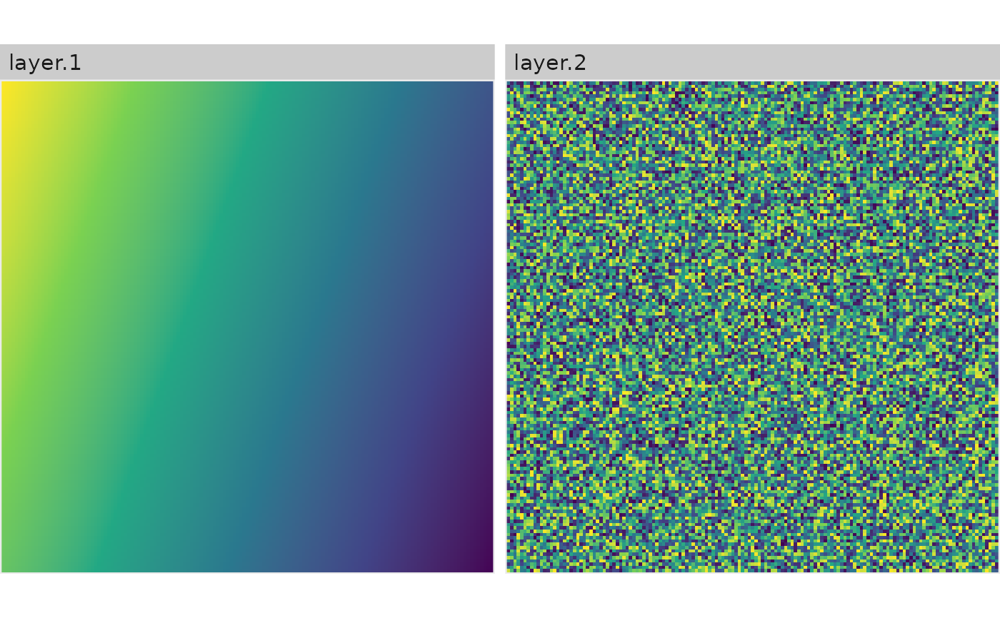
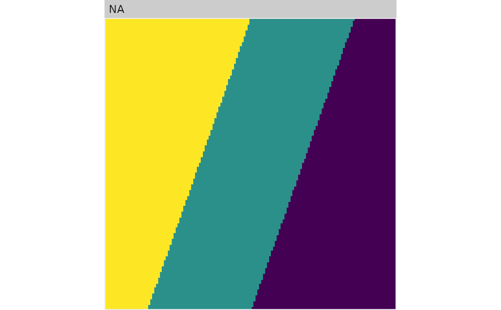

Plot a Raster* object with the NLMR default theme (as ggplot).
Usage
show_landscape(x, xlab, ylab, discrete, unique_scales, n_col, n_row, ...)
# S3 method for class 'RasterLayer'
show_landscape(x, xlab = "Easting", ylab = "Northing", discrete = FALSE, ...)
# S3 method for class 'list'
show_landscape(
x,
xlab = "Easting",
ylab = "Northing",
discrete = FALSE,
unique_scales = FALSE,
n_col = NULL,
n_row = NULL,
...
)
# S3 method for class 'RasterStack'
show_landscape(
x,
xlab = "Easting",
ylab = "Northing",
discrete = FALSE,
unique_scales = FALSE,
n_col = NULL,
n_row = NULL,
...
)
# S3 method for class 'RasterBrick'
show_landscape(
x,
xlab = "Easting",
ylab = "Northing",
discrete = FALSE,
unique_scales = FALSE,
n_col = NULL,
n_row = NULL,
...
)Arguments
- x
Raster* object
- xlab
x axis label, default "Easting"
- ylab
y axis label, default "Northing"
- discrete
If TRUE, the function plots a raster with a discrete legend.
- unique_scales
If TRUE and multiple raster are to be visualized, each facet can have a unique color scale for its fill
- n_col
If multiple rasters are to be visualized, n_col controls the number of columns for the facet
- n_row
If multiple rasters are to be visualized, n_row controls the number of rows for the facet
- ...
Arguments for
theme_nlm
Examples
# \donttest{
x <- gradient_landscape
#> Loading required namespace: raster
# classify
y <- util_classify(gradient_landscape,
n = 3,
level_names = c("Land Use 1", "Land Use 2", "Land Use 3"))
show_landscape(x)

show_landscape(y, discrete = TRUE)

show_landscape(list(gradient_landscape, random_landscape))
#> Warning: Removed 598 rows containing missing values or values outside the scale range
#> (`geom_raster()`).

show_landscape(raster::stack(gradient_landscape, random_landscape))
#> Warning: Removed 598 rows containing missing values or values outside the scale range
#> (`geom_raster()`).

show_landscape(list(gradient_landscape, y), unique_scales = TRUE)
#> Warning: Removed 598 rows containing missing values or values outside the scale range
#> (`geom_raster()`).

# }